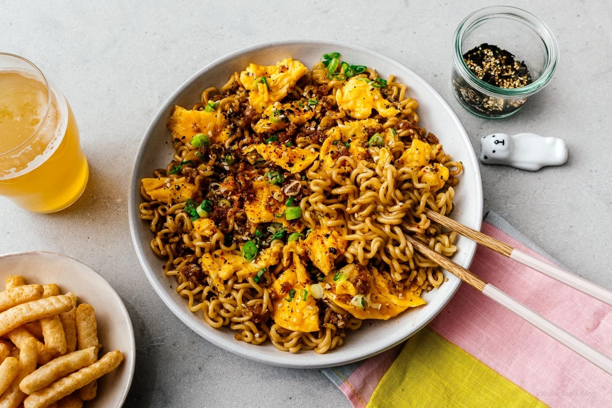

Instant Ramen Upgrade

Good ramen is what you make of it.
An upgraded ramen is the perfect way to add some flavor to your day. Easy, cheap, and preferred by many
frugal enthusiasts, this ramen journey will introduce spices, ingredients, and confidence into your meal
workflow.
Ingredients
- 1 instant ramen package
- 1 tbsp butter
- 1 tbsp minced garlic
- 1 tbsp brown sugar
- 1 tbsp soy sauce
- 1 egg
- 1/4 tbsp of favorite spice mix
Steps
- Cook the ramen and drain.
- Grab a pan and medium heat the butter and stir in the garlic, brown sugar and soy sauce.
- Add the ramen to your sauce and toss to coat it.
- Move the ramen to one side of the pan and use the empty space for your egg. Scramble.
- Toss until the egg is cooked well and serve with your spice choice.